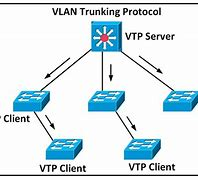

VLAN
(Vlan Trunkimg Protocol) Configurar y administrar VLAN en equipos Cisco. El protocolo VTP nace como una
herramienta de administración para redes de cierto tamaño, donde la gestión manual se vuelve
inabordable.
Métodos de funciones
SERVIDOR: Pueden crear, modificar y eliminar VLAN.
CLIENTE: No puede crear, modificar y eliminar VLAN
TRANSPARENTE: No participa en el intercambio VTP.
Dominios VTP
Incluye el nombre del dominio y una contraseña opcional para asegurar la autencidad.
Versiones de VTP
VTPv1: Funcionalidad básica.
VTPv2: Mejoras en interoperabilidad y configuración.
VTPv3: Soporte para VLAN y caracteísticas avanzadas.
Mensajes VTP
Diferentes tipos de mensajes para distribuir y sincronizar información de VLAN
Base de datos VLAN imanecida VLANs conocidos y su configuración.
